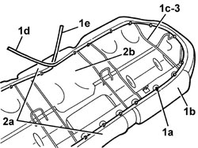
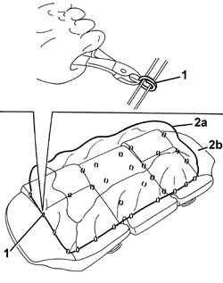

7050D21 TRIM OF REAR SEAT CUSHION RR WITH CUSHION REMOVED
- Path
- Procedures > 70 FITTINGS > 7050 REAR SEATS > 7050D REAR SEAT TRIM/PADDING > 7050D21 TRIM OF REAR SEAT CUSHION RR WITH CUSHION REMOVED
- Kind
- repair procedure (removal / refitting; the operation number is the code)
- Applies to
- all engines; all production periods
- Interactive page
- https://sloeber94.github.io/elrnDB/alfa/159/en/#/939011338
Applies to: all engines; all production periods
 Removing
Removing
 Refitting
Refitting1. Using clippers, cut all the retainers (1a) securing the perimeter of the cushion cover (1b) to the metal frame (1c).
Also release the ends (1d) and (1e).
2. Release the cover (2a) from the upholstery (2b) and from the metal frame (1c) along the entire perimeter of the cushion.
3. Remove the metal frame.

Applies to: all engines; all production periods
1. Fold the cushion over and, using clippers, cut all the upper cushion cover retainers.
2. Separate the cushion cover (2a) from the upholstery (2b).

Applies to: all engines; all production periods
Refitting
Removing- Check that the cushion cover is not damaged.
- Position the cushion cover on the upper part of the upholstery and attach the retainers using special pliers.
- Position the metal frame on the upholstery.
- Fit the cover on the upholstery, along the entire perimter of the cushion.
- Fasten one end to the metal frame, then pull the other end until the cover is taut; lastly, secure the end to the metal frame.
- Using special pliers, attach the retainers fastening the perimeter of the cushion cover to the metal frame.